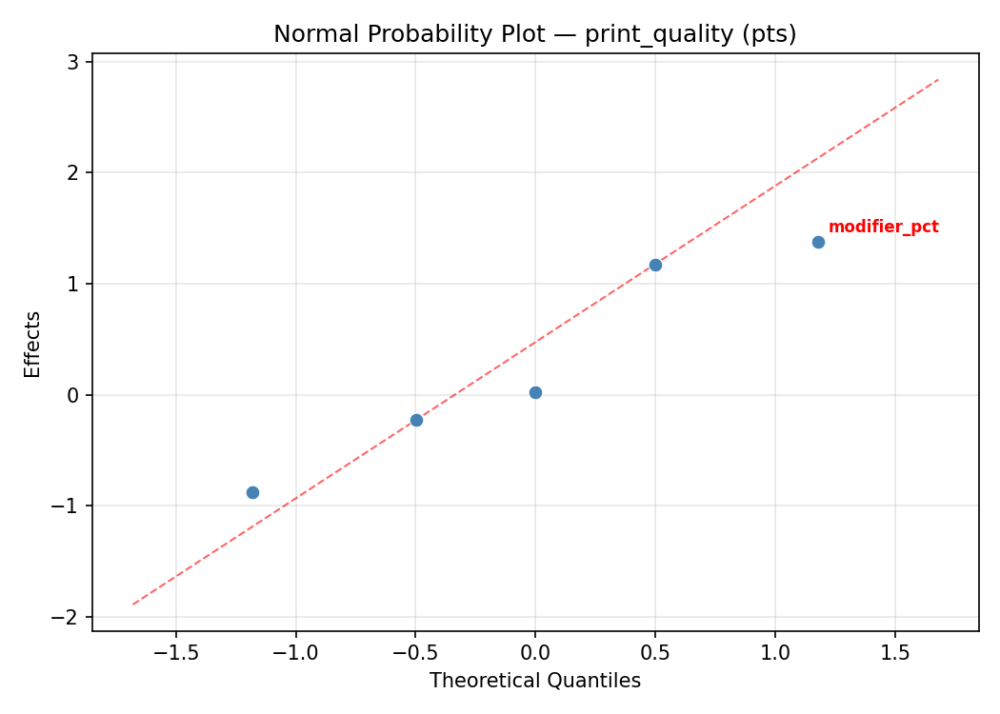
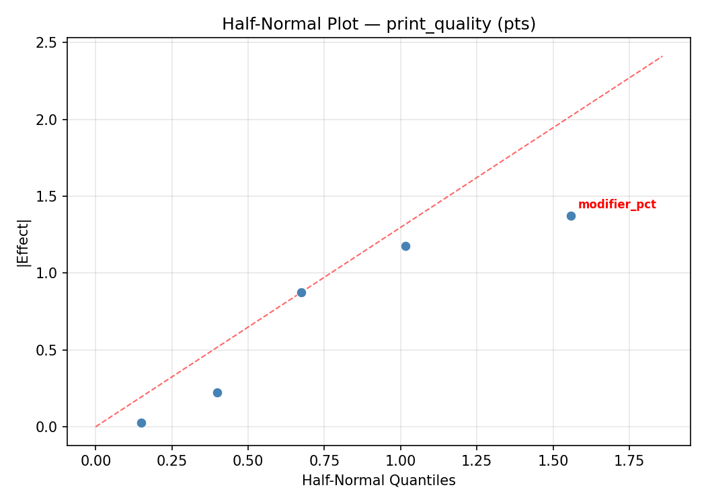
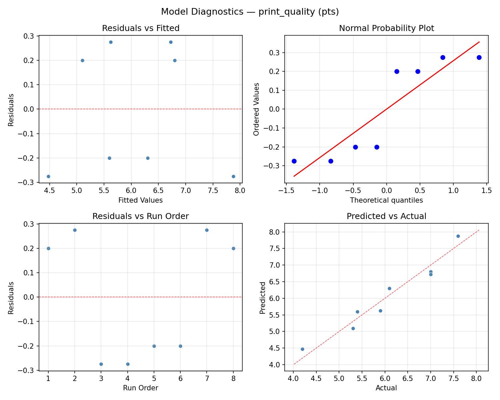
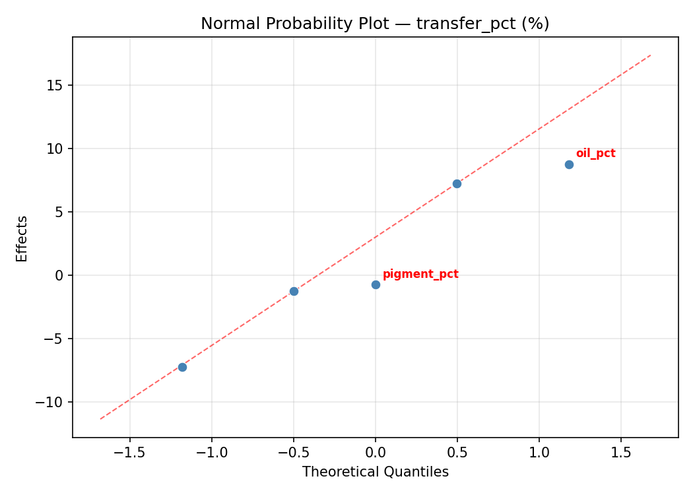
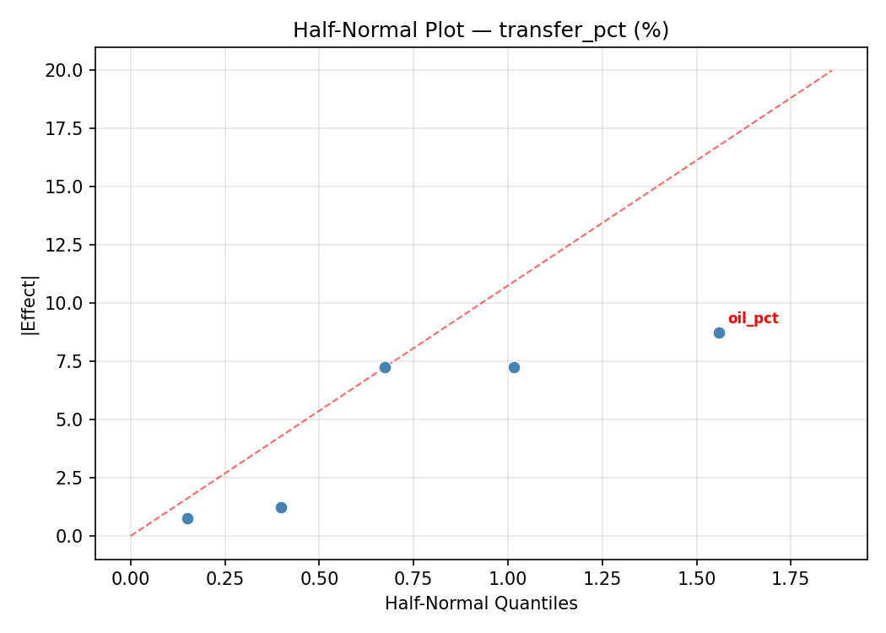
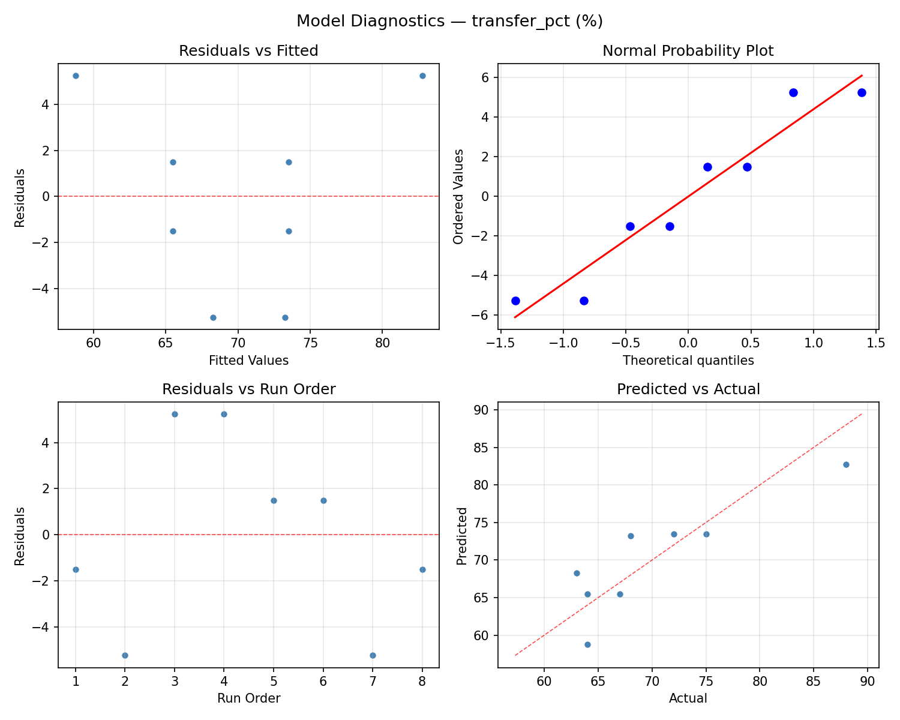

Summary
This experiment investigates printmaking ink viscosity. Plackett-Burman screening of ink tack, oil percentage, pigment load, modifier amount, and roller pressure for print quality and ink transfer.
The design varies 5 factors: tack level (level), ranging from 2 to 8, oil pct (%), ranging from 20 to 50, pigment pct (%), ranging from 15 to 35, modifier pct (%), ranging from 0 to 10, and roller pressure (level), ranging from 1 to 5. The goal is to optimize 2 responses: print quality (pts) (maximize) and transfer pct (%) (maximize). Fixed conditions held constant across all runs include method = relief, paper = BFK_rives.
A Plackett-Burman screening design was used to efficiently test 5 factors in only 8 runs. This design assumes interactions are negligible and focuses on identifying the most influential main effects.
Key Findings
For print quality, the most influential factors were tack level (34.6%), roller pressure (21.5%), modifier pct (19.6%). The best observed value was 7.6 (at tack level = 8, oil pct = 50, pigment pct = 35).
For transfer pct, the most influential factors were tack level (40.2%), pigment pct (27.1%), oil pct (17.8%). The best observed value was 88.0 (at tack level = 8, oil pct = 50, pigment pct = 35).
Recommended Next Steps
- Follow up with a response surface design (CCD or Box-Behnken) on the top 3–4 factors to model curvature and find the true optimum.
- Consider whether any fixed factors should be varied in a future study.
- The screening results can guide factor reduction — drop factors contributing less than 5% and re-run with a smaller, more focused design.
Experimental Setup
Factors
| Factor | Low | High | Unit |
|---|
tack_level | 2 | 8 | level |
oil_pct | 20 | 50 | % |
pigment_pct | 15 | 35 | % |
modifier_pct | 0 | 10 | % |
roller_pressure | 1 | 5 | level |
Fixed: method = relief, paper = BFK_rives
Responses
| Response | Direction | Unit |
|---|
print_quality | ↑ maximize | pts |
transfer_pct | ↑ maximize | % |
Configuration
{
"metadata": {
"name": "Printmaking Ink Viscosity",
"description": "Plackett-Burman screening of ink tack, oil percentage, pigment load, modifier amount, and roller pressure for print quality and ink transfer"
},
"factors": [
{
"name": "tack_level",
"levels": [
"2",
"8"
],
"type": "continuous",
"unit": "level"
},
{
"name": "oil_pct",
"levels": [
"20",
"50"
],
"type": "continuous",
"unit": "%"
},
{
"name": "pigment_pct",
"levels": [
"15",
"35"
],
"type": "continuous",
"unit": "%"
},
{
"name": "modifier_pct",
"levels": [
"0",
"10"
],
"type": "continuous",
"unit": "%"
},
{
"name": "roller_pressure",
"levels": [
"1",
"5"
],
"type": "continuous",
"unit": "level"
}
],
"fixed_factors": {
"method": "relief",
"paper": "BFK_rives"
},
"responses": [
{
"name": "print_quality",
"optimize": "maximize",
"unit": "pts"
},
{
"name": "transfer_pct",
"optimize": "maximize",
"unit": "%"
}
],
"settings": {
"operation": "plackett_burman",
"test_script": "use_cases/288_printmaking_ink/sim.sh"
}
}
Experimental Matrix
The Plackett-Burman Design produces 8 runs. Each row is one experiment with specific factor settings.
| Run | tack_level | oil_pct | pigment_pct | modifier_pct | roller_pressure |
|---|
| 1 | 8 | 50 | 35 | 0 | 1 |
| 2 | 2 | 20 | 35 | 10 | 1 |
| 3 | 2 | 50 | 15 | 10 | 1 |
| 4 | 8 | 50 | 35 | 10 | 5 |
| 5 | 2 | 50 | 15 | 0 | 5 |
| 6 | 8 | 20 | 15 | 10 | 5 |
| 7 | 2 | 20 | 35 | 0 | 5 |
| 8 | 8 | 20 | 15 | 0 | 1 |
Step-by-Step Workflow
1
Preview the design
$ python doe.py info --config use_cases/288_printmaking_ink/config.json
2
Generate the runner script
$ python doe.py generate --config use_cases/288_printmaking_ink/config.json \
--output use_cases/288_printmaking_ink/results/run.sh --seed 42
3
Execute the experiments
$ bash use_cases/288_printmaking_ink/results/run.sh
4
Analyze results
$ python doe.py analyze --config use_cases/288_printmaking_ink/config.json
5
Get optimization recommendations
$ python doe.py optimize --config use_cases/288_printmaking_ink/config.json
6
Multi-objective optimization
With 2 competing responses, use --multi to find the best compromise via Derringer–Suich desirability.
$ python doe.py optimize --config use_cases/288_printmaking_ink/config.json --multi
7
Generate the HTML report
$ python doe.py report --config use_cases/288_printmaking_ink/config.json \
--output use_cases/288_printmaking_ink/results/report.html
Features Exercised
| Feature | Value |
|---|
| Design type | plackett_burman |
| Factor types | continuous (all 5) |
| Arg style | double-dash |
| Responses | 2 (print_quality ↑, transfer_pct ↑) |
| Total runs | 8 |
Analysis Results
Generated from actual experiment runs using the DOE Helper Tool.
Response: print_quality
Top factors: tack_level (34.6%), roller_pressure (21.5%), modifier_pct (19.6%).
ANOVA
| Source | DF | SS | MS | F | p-value |
|---|
| Source | DF | SS | MS | F | p-value |
| tack_level | 1 | 1.7113 | 1.7113 | 2.070 | 0.2098 |
| oil_pct | 1 | 0.2112 | 0.2112 | 0.255 | 0.6347 |
| pigment_pct | 1 | 0.2112 | 0.2112 | 0.255 | 0.6347 |
| modifier_pct | 1 | 0.5513 | 0.5513 | 0.667 | 0.4513 |
| roller_pressure | 1 | 0.6612 | 0.6612 | 0.800 | 0.4122 |
| tack_level*oil_pct | 1 | 0.2112 | 0.2112 | 0.255 | 0.6347 |
| tack_level*pigment_pct | 1 | 0.2112 | 0.2112 | 0.255 | 0.6347 |
| tack_level*modifier_pct | 1 | 0.6612 | 0.6612 | 0.800 | 0.4122 |
| tack_level*roller_pressure | 1 | 0.5512 | 0.5512 | 0.667 | 0.4513 |
| oil_pct*pigment_pct | 1 | 1.7113 | 1.7113 | 2.070 | 0.2098 |
| oil_pct*modifier_pct | 1 | 0.0112 | 0.0112 | 0.014 | 0.9117 |
| oil_pct*roller_pressure | 1 | 5.2812 | 5.2812 | 6.387 | 0.0527 |
| pigment_pct*modifier_pct | 1 | 5.2812 | 5.2812 | 6.387 | 0.0527 |
| pigment_pct*roller_pressure | 1 | 0.0113 | 0.0113 | 0.014 | 0.9117 |
| modifier_pct*roller_pressure | 1 | 1.7112 | 1.7112 | 2.070 | 0.2098 |
| Error | (Lenth | PSE) | 5 | 4.1344 | 0.8269 |
| Total | 7 | 8.6387 | 1.2341 | | |
Pareto Chart

Main Effects Plot

Normal Probability Plot of Effects

Half-Normal Plot of Effects

Model Diagnostics

Response: transfer_pct
Top factors: tack_level (40.2%), pigment_pct (27.1%), oil_pct (17.8%).
ANOVA
| Source | DF | SS | MS | F | p-value |
|---|
| Source | DF | SS | MS | F | p-value |
| tack_level | 1 | 231.1250 | 231.1250 | 4.207 | 0.0955 |
| oil_pct | 1 | 45.1250 | 45.1250 | 0.821 | 0.4063 |
| pigment_pct | 1 | 105.1250 | 105.1250 | 1.914 | 0.2252 |
| modifier_pct | 1 | 21.1250 | 21.1250 | 0.385 | 0.5624 |
| roller_pressure | 1 | 1.1250 | 1.1250 | 0.020 | 0.8918 |
| tack_level*oil_pct | 1 | 105.1250 | 105.1250 | 1.914 | 0.2252 |
| tack_level*pigment_pct | 1 | 45.1250 | 45.1250 | 0.821 | 0.4063 |
| tack_level*modifier_pct | 1 | 1.1250 | 1.1250 | 0.020 | 0.8918 |
| tack_level*roller_pressure | 1 | 21.1250 | 21.1250 | 0.385 | 0.5624 |
| oil_pct*pigment_pct | 1 | 231.1250 | 231.1250 | 4.207 | 0.0955 |
| oil_pct*modifier_pct | 1 | 28.1250 | 28.1250 | 0.512 | 0.5063 |
| oil_pct*roller_pressure | 1 | 55.1250 | 55.1250 | 1.003 | 0.3625 |
| pigment_pct*modifier_pct | 1 | 55.1250 | 55.1250 | 1.003 | 0.3625 |
| pigment_pct*roller_pressure | 1 | 28.1250 | 28.1250 | 0.512 | 0.5063 |
| modifier_pct*roller_pressure | 1 | 231.1250 | 231.1250 | 4.207 | 0.0955 |
| Error | (Lenth | PSE) | 5 | 274.6875 | 54.9375 |
| Total | 7 | 486.8750 | 69.5536 | | |
Pareto Chart

Main Effects Plot

Normal Probability Plot of Effects

Half-Normal Plot of Effects

Model Diagnostics

Response Surface Plots
3D surfaces fitted with quadratic RSM. Red dots are observed data points.
print quality modifier pct vs roller pressure

print quality oil pct vs modifier pct

print quality oil pct vs pigment pct

print quality oil pct vs roller pressure

print quality pigment pct vs modifier pct

print quality pigment pct vs roller pressure

print quality tack level vs modifier pct

print quality tack level vs oil pct

print quality tack level vs pigment pct

print quality tack level vs roller pressure

transfer pct modifier pct vs roller pressure

transfer pct oil pct vs modifier pct

transfer pct oil pct vs pigment pct

transfer pct oil pct vs roller pressure

transfer pct pigment pct vs modifier pct

transfer pct pigment pct vs roller pressure

transfer pct tack level vs modifier pct

transfer pct tack level vs oil pct

transfer pct tack level vs pigment pct

transfer pct tack level vs roller pressure

Multi-Objective Optimization
When responses compete, Derringer–Suich desirability finds the best compromise.
Each response is scaled to a 0–1 desirability, then combined via a weighted geometric mean.
Overall Desirability
D = 0.9545
Per-Response Desirability
| Response | Weight | Desirability | Predicted | Dir |
|---|
print_quality |
1.5 |
|
7.60 0.9545 7.60 pts |
↑ |
transfer_pct |
1.0 |
|
88.00 0.9545 88.00 % |
↑ |
Recommended Settings
| Factor | Value |
|---|
tack_level | 2 level |
oil_pct | 50 % |
pigment_pct | 15 % |
modifier_pct | 10 % |
roller_pressure | 1 level |
Source: from observed run #4
Trade-off Summary
Sacrifice = how much worse than single-objective best.
| Response | Predicted | Best Observed | Sacrifice |
|---|
transfer_pct | 88.00 | 88.00 | +0.00 |
Top 3 Runs by Desirability
| Run | D | Factor Settings |
|---|
| #1 | 0.5868 | tack_level=2, oil_pct=20, pigment_pct=35, modifier_pct=0, roller_pressure=5 |
| #6 | 0.5236 | tack_level=2, oil_pct=20, pigment_pct=35, modifier_pct=10, roller_pressure=1 |
Model Quality
| Response | R² | Type |
|---|
transfer_pct | 0.7715 | linear |
Full Multi-Objective Output
============================================================
MULTI-OBJECTIVE OPTIMIZATION
Method: Derringer-Suich Desirability Function
============================================================
Overall desirability: D = 0.9545
Response Weight Desirability Predicted Direction
---------------------------------------------------------------------
print_quality 1.5 0.9545 7.60 pts ↑
transfer_pct 1.0 0.9545 88.00 % ↑
Recommended settings:
tack_level = 2 level
oil_pct = 50 %
pigment_pct = 15 %
modifier_pct = 10 %
roller_pressure = 1 level
(from observed run #4)
Trade-off summary:
print_quality: 7.60 (best observed: 7.60, sacrifice: +0.00)
transfer_pct: 88.00 (best observed: 88.00, sacrifice: +0.00)
Model quality:
print_quality: R² = 0.7034 (linear)
transfer_pct: R² = 0.7715 (linear)
Top 3 observed runs by overall desirability:
1. Run #4 (D=0.9545): tack_level=2, oil_pct=50, pigment_pct=15, modifier_pct=10, roller_pressure=1
2. Run #1 (D=0.5868): tack_level=2, oil_pct=20, pigment_pct=35, modifier_pct=0, roller_pressure=5
3. Run #6 (D=0.5236): tack_level=2, oil_pct=20, pigment_pct=35, modifier_pct=10, roller_pressure=1
Full Analysis Output
=== Main Effects: print_quality ===
Factor Effect Std Error % Contribution
--------------------------------------------------------------
tack_level 0.9250 0.3928 34.6%
roller_pressure 0.5750 0.3928 21.5%
modifier_pct -0.5250 0.3928 19.6%
oil_pct 0.3250 0.3928 12.1%
pigment_pct 0.3250 0.3928 12.1%
=== ANOVA Table: print_quality ===
Source DF SS MS F p-value
-----------------------------------------------------------------------------
tack_level 1 1.7113 1.7113 2.070 0.2098
oil_pct 1 0.2112 0.2112 0.255 0.6347
pigment_pct 1 0.2112 0.2112 0.255 0.6347
modifier_pct 1 0.5513 0.5513 0.667 0.4513
roller_pressure 1 0.6612 0.6612 0.800 0.4122
tack_level*oil_pct 1 0.2112 0.2112 0.255 0.6347
tack_level*pigment_pct 1 0.2112 0.2112 0.255 0.6347
tack_level*modifier_pct 1 0.6612 0.6612 0.800 0.4122
tack_level*roller_pressure 1 0.5512 0.5512 0.667 0.4513
oil_pct*pigment_pct 1 1.7113 1.7113 2.070 0.2098
oil_pct*modifier_pct 1 0.0112 0.0112 0.014 0.9117
oil_pct*roller_pressure 1 5.2812 5.2812 6.387 0.0527
pigment_pct*modifier_pct 1 5.2812 5.2812 6.387 0.0527
pigment_pct*roller_pressure 1 0.0113 0.0113 0.014 0.9117
modifier_pct*roller_pressure 1 1.7112 1.7112 2.070 0.2098
Error (Lenth PSE) 5 4.1344 0.8269
Total 7 8.6387 1.2341
Note: Error estimated using Lenth's pseudo-standard-error (unreplicated design)
=== Interaction Effects: print_quality ===
Factor A Factor B Interaction % Contribution
------------------------------------------------------------------------
oil_pct roller_pressure -1.6250 23.2%
pigment_pct modifier_pct -1.6250 23.2%
oil_pct pigment_pct 0.9250 13.2%
modifier_pct roller_pressure 0.9250 13.2%
tack_level modifier_pct 0.5750 8.2%
tack_level roller_pressure -0.5250 7.5%
tack_level oil_pct 0.3250 4.6%
tack_level pigment_pct 0.3250 4.6%
oil_pct modifier_pct 0.0750 1.1%
pigment_pct roller_pressure 0.0750 1.1%
=== Summary Statistics: print_quality ===
tack_level:
Level N Mean Std Min Max
------------------------------------------------------------
2 4 5.6000 1.1690 4.2000 7.0000
8 4 6.5250 0.9708 5.4000 7.6000
oil_pct:
Level N Mean Std Min Max
------------------------------------------------------------
20 4 5.9000 1.3614 4.2000 7.0000
50 4 6.2250 0.9777 5.3000 7.6000
pigment_pct:
Level N Mean Std Min Max
------------------------------------------------------------
15 4 5.9000 0.7789 5.3000 7.0000
35 4 6.2250 1.4841 4.2000 7.6000
modifier_pct:
Level N Mean Std Min Max
------------------------------------------------------------
0 4 6.3250 1.1529 5.3000 7.6000
10 4 5.8000 1.1690 4.2000 7.0000
roller_pressure:
Level N Mean Std Min Max
------------------------------------------------------------
1 4 5.7750 1.4104 4.2000 7.6000
5 4 6.3500 0.8185 5.3000 7.0000
=== Main Effects: transfer_pct ===
Factor Effect Std Error % Contribution
--------------------------------------------------------------
tack_level 10.7500 2.9486 40.2%
pigment_pct 7.2500 2.9486 27.1%
oil_pct 4.7500 2.9486 17.8%
modifier_pct -3.2500 2.9486 12.1%
roller_pressure -0.7500 2.9486 2.8%
=== ANOVA Table: transfer_pct ===
Source DF SS MS F p-value
-----------------------------------------------------------------------------
tack_level 1 231.1250 231.1250 4.207 0.0955
oil_pct 1 45.1250 45.1250 0.821 0.4063
pigment_pct 1 105.1250 105.1250 1.914 0.2252
modifier_pct 1 21.1250 21.1250 0.385 0.5624
roller_pressure 1 1.1250 1.1250 0.020 0.8918
tack_level*oil_pct 1 105.1250 105.1250 1.914 0.2252
tack_level*pigment_pct 1 45.1250 45.1250 0.821 0.4063
tack_level*modifier_pct 1 1.1250 1.1250 0.020 0.8918
tack_level*roller_pressure 1 21.1250 21.1250 0.385 0.5624
oil_pct*pigment_pct 1 231.1250 231.1250 4.207 0.0955
oil_pct*modifier_pct 1 28.1250 28.1250 0.512 0.5063
oil_pct*roller_pressure 1 55.1250 55.1250 1.003 0.3625
pigment_pct*modifier_pct 1 55.1250 55.1250 1.003 0.3625
pigment_pct*roller_pressure 1 28.1250 28.1250 0.512 0.5063
modifier_pct*roller_pressure 1 231.1250 231.1250 4.207 0.0955
Error (Lenth PSE) 5 274.6875 54.9375
Total 7 486.8750 69.5536
Note: Error estimated using Lenth's pseudo-standard-error (unreplicated design)
=== Interaction Effects: transfer_pct ===
Factor A Factor B Interaction % Contribution
------------------------------------------------------------------------
oil_pct pigment_pct 10.7500 19.4%
modifier_pct roller_pressure 10.7500 19.4%
tack_level oil_pct 7.2500 13.1%
oil_pct roller_pressure -5.2500 9.5%
pigment_pct modifier_pct -5.2500 9.5%
tack_level pigment_pct 4.7500 8.6%
oil_pct modifier_pct -3.7500 6.8%
pigment_pct roller_pressure -3.7500 6.8%
tack_level roller_pressure -3.2500 5.9%
tack_level modifier_pct -0.7500 1.4%
=== Summary Statistics: transfer_pct ===
tack_level:
Level N Mean Std Min Max
------------------------------------------------------------
2 4 64.7500 2.2174 63.0000 68.0000
8 4 75.5000 8.9629 67.0000 88.0000
oil_pct:
Level N Mean Std Min Max
------------------------------------------------------------
20 4 67.7500 3.3040 64.0000 72.0000
50 4 72.5000 11.6762 63.0000 88.0000
pigment_pct:
Level N Mean Std Min Max
------------------------------------------------------------
15 4 66.5000 4.0415 63.0000 72.0000
35 4 73.7500 10.5317 64.0000 88.0000
modifier_pct:
Level N Mean Std Min Max
------------------------------------------------------------
0 4 71.7500 10.9659 64.0000 88.0000
10 4 68.5000 5.9161 63.0000 75.0000
roller_pressure:
Level N Mean Std Min Max
------------------------------------------------------------
1 4 70.5000 11.7898 63.0000 88.0000
5 4 69.7500 4.7871 64.0000 75.0000
Optimization Recommendations
=== Optimization: print_quality ===
Direction: maximize
Best observed run: #4
tack_level = 8
oil_pct = 50
pigment_pct = 35
modifier_pct = 10
roller_pressure = 5
Value: 7.6
RSM Model (linear, R² = 0.9742, Adj R² = 0.9099):
Coefficients:
intercept +6.0625
tack_level -0.2875
oil_pct +0.4625
pigment_pct +0.2625
modifier_pct +0.8125
roller_pressure +0.1625
Predicted optimum (from linear model, at observed points):
tack_level = 8
oil_pct = 50
pigment_pct = 35
modifier_pct = 10
roller_pressure = 5
Predicted value: 7.4750
Surface optimum (via L-BFGS-B, linear model):
tack_level = 2
oil_pct = 50
pigment_pct = 35
modifier_pct = 10
roller_pressure = 5
Predicted value: 8.0500
Model quality: Excellent fit — surface predictions are reliable.
Factor importance:
1. modifier_pct (effect: 1.6, contribution: 40.9%)
2. oil_pct (effect: 0.9, contribution: 23.3%)
3. tack_level (effect: -0.6, contribution: 14.5%)
4. pigment_pct (effect: 0.5, contribution: 13.2%)
5. roller_pressure (effect: 0.3, contribution: 8.2%)
=== Optimization: transfer_pct ===
Direction: maximize
Best observed run: #4
tack_level = 8
oil_pct = 50
pigment_pct = 35
modifier_pct = 10
roller_pressure = 5
Value: 88.0
RSM Model (linear, R² = 0.6359, Adj R² = -0.2742):
Coefficients:
intercept +70.1250
tack_level +0.3750
oil_pct +4.3750
pigment_pct +2.6250
modifier_pct +2.6250
roller_pressure +2.3750
Predicted optimum (from linear model, at observed points):
tack_level = 8
oil_pct = 50
pigment_pct = 35
modifier_pct = 10
roller_pressure = 5
Predicted value: 82.5000
Surface optimum (via L-BFGS-B, linear model):
tack_level = 8
oil_pct = 50
pigment_pct = 35
modifier_pct = 10
roller_pressure = 5
Predicted value: 82.5000
Model quality: Moderate fit — use predictions directionally, not precisely.
Factor importance:
1. oil_pct (effect: 8.8, contribution: 35.4%)
2. pigment_pct (effect: 5.2, contribution: 21.2%)
3. modifier_pct (effect: 5.2, contribution: 21.2%)
4. roller_pressure (effect: 4.8, contribution: 19.2%)
5. tack_level (effect: 0.8, contribution: 3.0%)